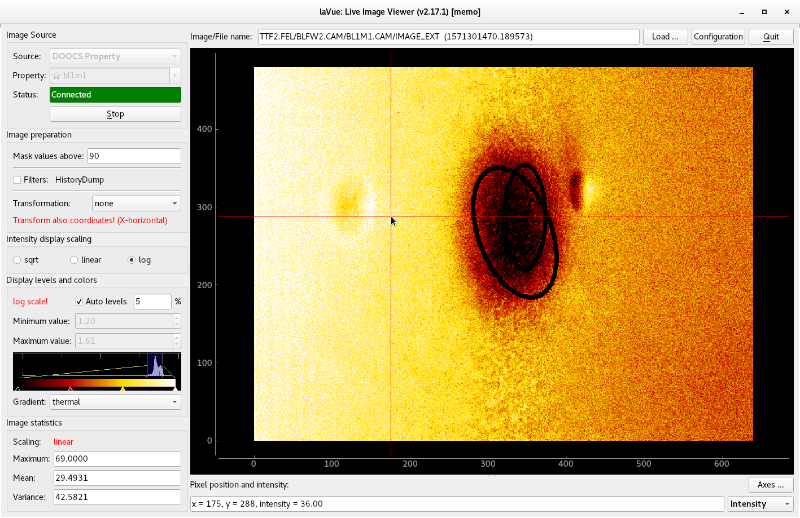

DOOCS property¶
Images from a tango attribute, e.g. FLASH detectors

The DOOCS Property image source frame contains the following fields:
Property: selects the doocs property,
e.g. TTF2.FEL/BLFW2.CAM/BL0M0.CAM/IMAGE_EXT.
The possible properties can be preselected in the configuration dialog.Status: shows the connection status. It also displays a port of ZMQ security stream if it is enabled.
Start/Stop button to launch or interrupt image querying
By clicking on an empty start in the Property combobox you can add a label to the current item (only in the expert mode).
By clicking on an full start in the Property combobox you can remove the label of the current item (only in the expert mode).